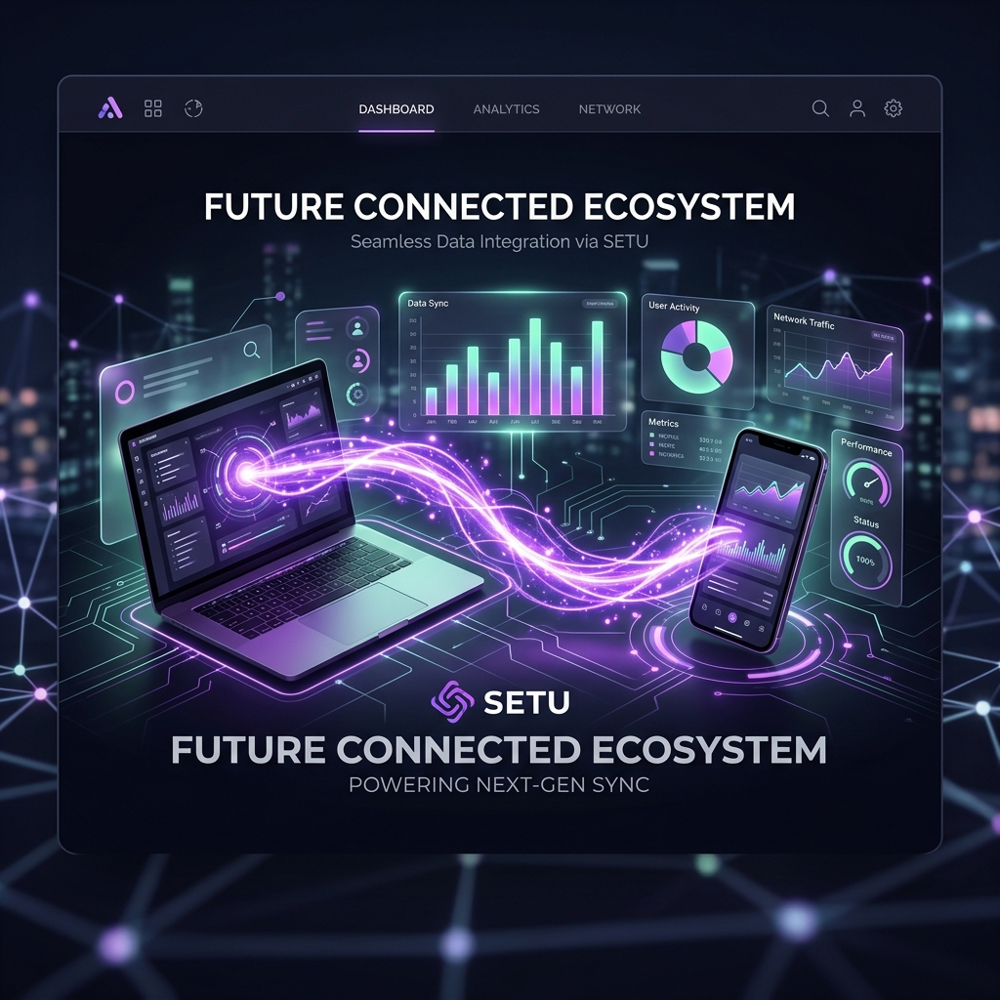

A private, voice-native AI cockpit that makes your devices work as one. Automate file tasks, run shell scripts, and control apps over your local network. No cloud relay, zero cost, completely local.

Automate everything on your workstation without sacrificing speed, security, or privacy.
Activate with the local wake word "Hey Setu". Runs open-source Faster-Whisper STT and Kokoro TTS locally on your machine—no remote audio recording.
Phone and laptop act as one system. Speak commands on your phone and watch your laptop navigate Chrome via Playwright or open local files using encrypted LAN WebSockets.
No external server holds your history, memories, or screenshots. Discovery uses local mDNS, pairing is secured by ECDH, and all commands are client-side sandboxed.
When you issue a command, Setu pre-classifies simple commands locally via PyTorch, saving cloud LLM costs. Multi-step actions generate a detailed task plan for your consent, giving you absolute oversight before execution.
Download the companion workstation daemon for Windows and the mobile executor for Android.
Installs the background workstation daemon on Windows. Serves as the play-server, hosting the secure WebSocket server and automation engines.
The remote voice and gesture control device. Holds pairing configuration details, streams real-time logs and desktop screenshot outputs over local subnets.
Setu is designed from the ground up to guarantee local-first processing. No voice clips, screenshot frames, or execution telemetry are saved on external servers. All authentication tokens are verified locally.